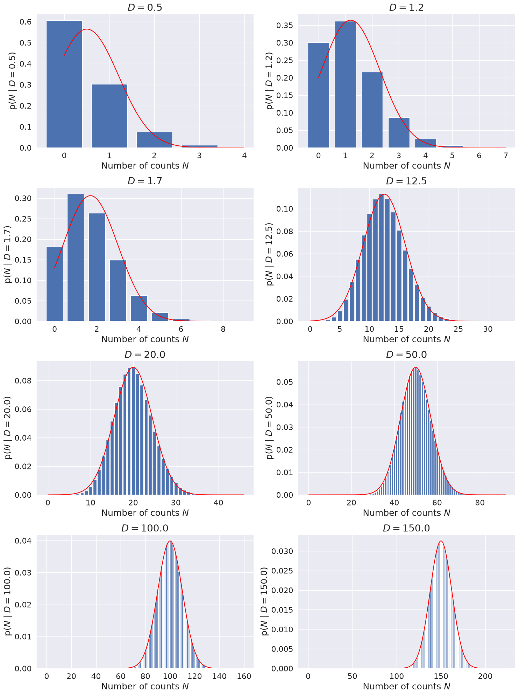
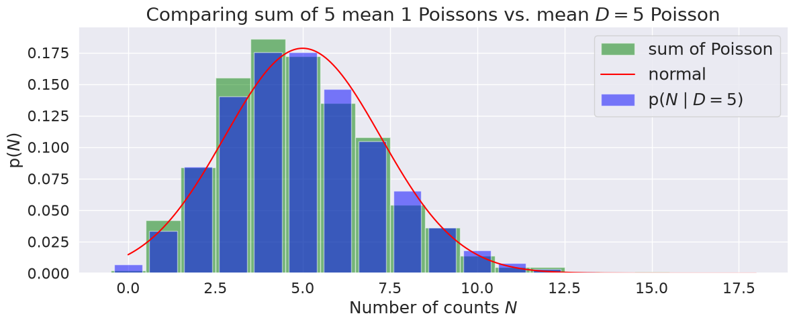
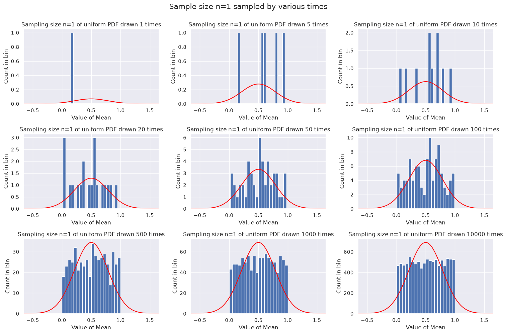
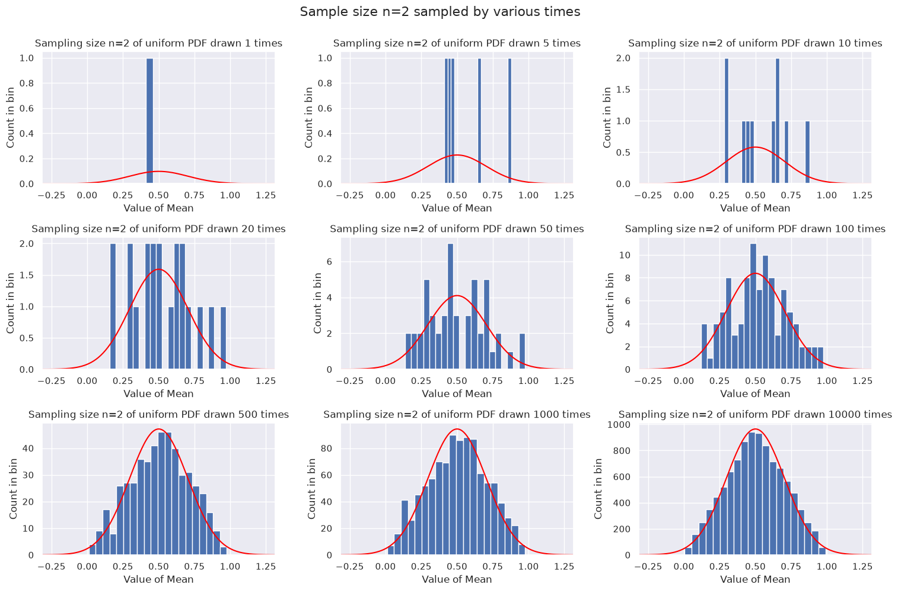
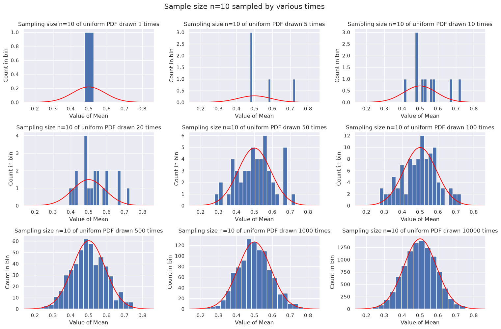
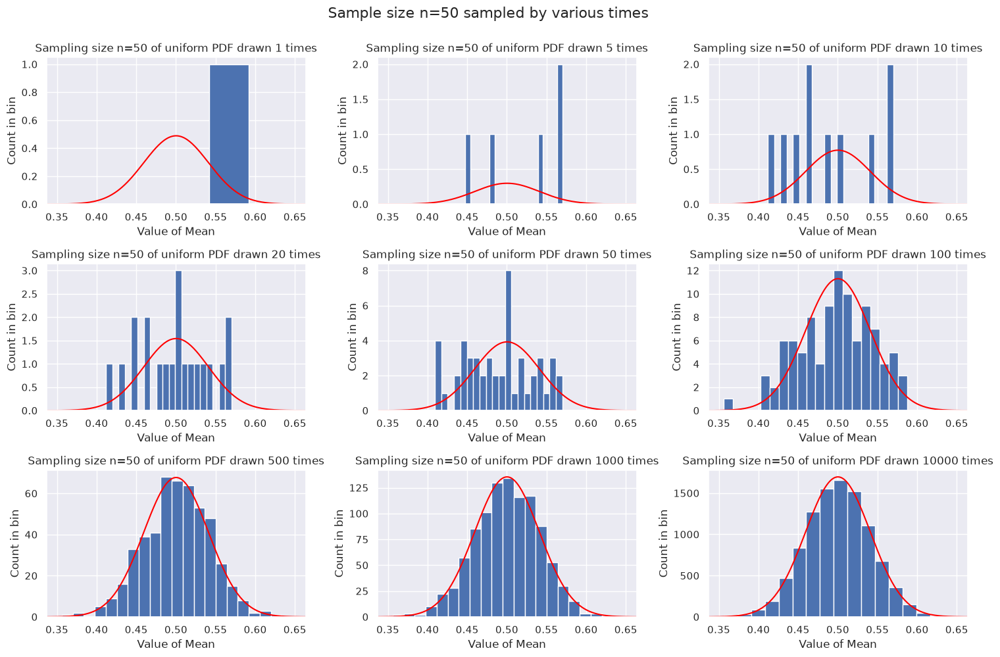

5.4. The Central Limit Theorem#
Another reason a Gaussian PDF emerges in many situations is because the Central Limit Theorem (CLT) states that the sum of random variables drawn from all (or almost all) probability distributions will eventually produce Gaussians if the number of samples in each sum is large enough.
Central Limit Theorem
The sum of \(n\) random values drawn from any PDF of finite variance \(\sigma^2\) tends as \(n \rightarrow \infty\) to be Gaussian distributed about the expectation value of the sum, with variance \(n \sigma^2\).
Consequences of the CLT:#
The mean of a large number of values becomes normally distributed regardless of the probability distribution the values are drawn from.
The binomial, Poisson, chi-squared, and Student’s t- distributions all approach Gaussian distributions in the limit of a large number of degrees of freedom (e.q., for large \(n\) for binomial). This consequence is probably not immediately obvious to you from the statement of the CLT! (See below for further details on the Poisson distribution.)
Checkpoint Question
Why would we expect the CLT to work for a binomial distribution?
Hint
If we denote Bin(\(n,p\)) as the binomial distribution for \(n\) trials with probability \(p\) of success, how is Bin(\(1,p\)) related to Bin(\(n,p\))?
Answer
If we add up \(n\) random variables from Bin(\(1,p\)), each with value 0 or 1, this is equivalent to a Bin(\(n,p\)) random variable with the same number of successes. So we already have a sum of random variables built in and the CLT will apply. (In more detail: getting \(k\) ones and \(n-k\) zeros from the \(n\) Bin(\(1,p\)) draws will have probability \(p^k\) times \((1-p)^{n-k}\) times the number of combinations \(n\choose k\). This is the same as the binomial probability for \(k\) successes.)
Moments of a PDF from a sum of random variables#
A Gaussian distribution is completely determined by its first and second moments (that is, its mean \(\mu\) and variance \(\sigma^2\)). This is obvious if we know the distribution is a Gaussian, because its parametrization is fully specified given \(\mu\) and \(\sigma^2\). But this implies that all of the higher moments of a Gaussian distribution are fully determined by \(\mu\) and \(\sigma\). And if we find a distribution with the same pattern of higher moments, it must be a Gaussian. In this subsection we see how this observation leads us toward the CLT by returning to the analyses in Expectation values and moments.
It will be sufficient here (and much cleaner) to work with mean-zero distributions. The moments \(\{m_k\}_{\mathcal{N}(0,\sigma^2)}\) of a mean-zero Gaussian distribution, which will be our target, can be found directly from the moment-generating function in (4.9):
which means for \(X \sim \mathcal{N}(0,\sigma^2)\) we find
where \((2j-1)!! = (2j-1)\cdot(2j-3)\cdots 3 \cdot 1\). Then all the odd moments are zero and \(\{m_2\}_{\mathcal{N}(0,\sigma^2)}= \sigma^2\), \(\{m_4\}_{\mathcal{N}(0,\sigma^2)} = 3\sigma^4\), \(\{m_6\}_{\mathcal{N}(0,\sigma^2)} = 15\sigma^6\), and so on.
With those results in hand, we consider any distribution with mean zero and a finite variance \(\sigma^2\). We consider a sum of \(n\) random variables, all drawn independently from that same mean-zero (but not necessarily symmetric) distribution (hence they are iid), scaled by an overall \(1/\sqrt{n}\) factor:
Let’s consider moments \(m_k = \mathbb{E}[X^k]\) of \(X\) as \(n\) gets large. \(m_0 = 1\) and \(m_1 = 0\), since the distribution is normalized and mean zero. By using the linearity of expectation values, the independence of the \(x_i\), and \(\mathbb{E}[x_i]=0\), we find \(m_2\) directly:
We see that the scaling \(1/\sqrt{n}\) in the definition of \(X\) ensures an \(n\)-independent variance equal to the variance of the distribution. For \(m_3\),
where the terms set equal to zero have at least one \(\mathbb{E}[x_1] = 0\). Note that while the distribution can have a non-zero skewness (third moment), it will be suppressed as \(n\) gets large. For \(m_4\),
Now as \(n\) gets large, \(m_4\) reduces to the Gaussian kurtosis result of \(3\sigma^4\). Note that as long as \(n\) is finite, however, there will be non-Gaussian contributions (called excess kurtosis).
More generally, we see that the \(\mathbb{E}[x_i^k]\) term in \(m_k\) for \(k\geq 2\) comes with a single factor of \(n\), so it will always be suppressed by increasing powers of \(\frac{1}{n}\). The only \(n\)-independent terms will be \(k/2\) products of \(\mathbb{E}[x_i^2] = \sigma^2\), with a coefficient that exactly matches \(\{m_k\}_{\mathcal{N}(0,\sigma^2)}\).
Thus, the moments of the \(X\) distribution will tend toward those of a Gaussian, meaning that the distribution itself tends towards a Gaussian distribution. That is the central limit theorem. Now let’s make a different construction towards the same end.
Proof of the CLT#
Start with independent random variables \(x_1,\cdots,x_n\) drawn from a distribution with mean \(\langle x \rangle = 0\) and variance \(\langle x^2\rangle = \sigma^2\), where
(Assuming mean zero is general, because we can always work with the distribution of \(x - \mu\).) As in the last section, let
scaling by \(1/\sqrt{n}\) so that the variance of \(X\) is constant in the \(n\rightarrow\infty\) limit.
What is the distribution of \(X\)? \(\Longrightarrow\) call it \(p(X|I)\), where \(I\) is the information about the probability distribution for \(x_j\).
Plan: Use the sum and product rules and their consequences to relate \(p(X)\) to what we know of \(p(x_j)\). (Note: we’ll suppress \(I\) to keep the formulas from getting too cluttered.)
Checkpoint question
State the rule used to justify each step.
Answer
marginalization
product rule
independence
We might proceed by using a direct, normalized expression for \(p(X|x_1,\cdots,x_n)\),
Checkpoint question
What is \(p(X|x_1,\cdots,x_n)\)?
Hint
If we know each of the \(x_i\) values, we know \(X\) exactly!
Answer
\(p(X|x_1,\cdots,x_n) = \delta\Bigl(X - \frac{1}{\sqrt{n}}(x_1 + \cdots + x_n)\Bigr) = \frac{1}{2\pi} \int_{-\infty}^{\infty} d\omega \, e^{i\omega\Bigl(X - \frac{1}{\sqrt{n}}\sum_{j=1}^n x_j\Bigr)}\)
and perform one of the integrations. Instead we will use a Fourier representation (see the answer to the Checkpoint question):
Substituting into \(p(X)\) and gathering together all pieces with \(x_j\) dependence while exchanging the order of integrations:
Observe that the terms in []s have factorized into a product of independent integrals and they are all the same (just different labels for the integration variables). Now we Taylor expand \(e^{-i\omega x_j/\sqrt{n}}\), arguing that the Fourier integral is dominated by small \(x\) as \(n\rightarrow\infty\). (When does this fail?) We find:
Then, using that \(p(x)\) is normalized (i.e., \(\int_{-\infty}^{\infty} dx\, p(x) = 1\)) and with the notation \(\langle f(x) \rangle\) for the expectation value of \(f(x)\),
Now we can substitute into the posterior for \(X\) and take the large \(n\) limit:
Checkpoint question
How did we use the large \(n\) limit to get the first equality on the last line?
Answer
We used
We can understand this intuitively by multiplying out
In getting this result we have dropped terms that are of order \(1/n\) and \(1/n^2\). All terms that we dropped in truncating the Taylor expansions for each Fourier integral will also be suppressed by inverse powers (or half powers) of \(n\).
Visualizing the CLT#
The general statement of the central limit theory (CLT) is that the sum of \(n\) random variables drawn from any PDF (or multiple PDFs) of finite variance \(\sigma^2\) tends as \(n\rightarrow\infty\) to be Gaussian distributed about the expectation value of the sum, with variance \(n\sigma^2\). (So we would scale the sum by \(1/\sqrt{n}\) to keep the variance fixed.) In this section we look visually at several consequences of the CLT.
Things to think about:
What does “large” number of degrees of freedom actually mean? Does it matter where we look?
If we have a large number of draws from a uniform distribution, does the CLT imply that the histogrammed distribution should look like a Gaussian?
Can you identify a case (that we have seen) where the CLT will fail?
Answers
“Large” will depend on detail, but it is often surprising how few the number is before the CLT kicks in (e.g., often of order 30).
Yes! This is illustrated below.
The Cauchy distribution will fail because its variance is not finite.
Limit of Poisson distribution is Gaussian#
One consequence of the CLT is that distributions such as the Binomial and Poisson distributions all tend to look like Gaussian distributions in the limit of a large number of drawings. Here we visualize how the Poisson distribution in the limit \(D \rightarrow \infty\) approaches a Gaussian distribution:
with \(N\) an integer. You will be asked to prove this limit in a later notebook.
Note: this limiting functional form is not obviously connected to the general statement of the CLT up above. What is the connection of the Gaussian limit to a sum of random variables as prescribed by the CLT? Answered below with a test.
Make successive histogram plots of the Poisson distribution, increasing the value of \(D\) from 0.5 to 50, and superposing the normal distribution it is supposed to approach.

Compare a sum of D Poisson draws with mean 1 to a single Poisson distribution with mean D#
Now we answer the question asked above: What is the connection of the Gaussian limit to a sum of random variables as prescribed by the CLT?
The answer is that a sum of Poisson distributed random variables is itself Poisson distributed. For example, if \(X_1,\ldots,X_D\) are independent Poisson random variables with mean 1 (\(D\) is an integer here), then \(Y = \sum_{i=1}^D X_i\) is a Poisson random variable with mean \(D\). So the sum is built in by directly considering \(Y\). Note the analogy to the situation with the binomial distribution and the CLT.
Here we test this answer by plotting the histogram of num_draws samples, each the sum of \(D\) mean-1 Poisson samples, to the probability mass function (pmf) of a Poisson with mean-D (and also plot the Gaussian limit).

Things to try:
Change the number of draws
Change the value of D
Behavior of the mean of a fixed-size sample#
Here we take the mean of a fixed-size sample drawn from any PDF, and then repeat a number of times and look at the distribution of the means. According to the CLT, this distribution should approach a Gaussian PDF. For our test PDF we’ll use a uniform distribution, although this is easy to switch to another distribution.
First example: each sample is only one point#
Since the sample size is one, the mean is just the point, so the distributions here will look like the original distribution (no approach to Gaussian). Note that we bin the trivial means (the individual draws) into 20 bins.
mean of uniform array = 0.500
standard deviation of uniform array = 0.289

As expected, we just get a better and better reproduction of the original distribution, which is uniform in this case. We don’t expect any connection to a Gaussian from the CLT in this case. That is, just taking a lot of samples from a distribution doesn’t mean in general that we will get a normal distribution.
Second example: each sample is two points#
So the mean is the average of the two points. We divide the means into 20 bins.

As the number of means gets larger, we see that a peak develops at 1/2 and the shape becomes triangular. If we think of the average of two uniformly drawn points from [0,1], it is most likely that their average will be close to 1/2 and unlikely to be at the ends (e.g., to get near 0, one would need both numbers to be close to 0).
Third example: each sample is 10 points#
Now we see the trends from \(n=2\) being accentuated. By the time we have 10000 means to histogram, it looks like a pretty good Gaussian. Note that the width of the Gaussian is set by the sample size \(n=10\), not by how many draws are made. The width decreases as \(1/\sqrt{n}\), so from \(n=2\) above to \(n=10\) here it is roughly a factor of 2.2 smaller (0.25 vs. 0.1).

Fourth example: each sample is 50 points#
By now we are taking the mean of 50 points with each sample. This will increasingly be close to 1/2 and very rarely far from 1/2. The width decreases as \(1/\sqrt{n}\), so from \(n=10\) to \(n=50\) it is roughly a factor of 2.2 smaller (0.1 vs. 0.04).

Adding \(n\) variables drawn from a distribution#
We’ll use the results derived for combining \(n\) variables drawn from the same zero-mean probability distribution with an overall \(1/\sqrt{n}\). The generalization to different PDFs (and to non-zero means) is straightforward.
So the idea will be to take a distribution, do an FT with the frequency divided by \(\sqrt{n}\), raise it to the \(n^{\rm th}\) power, then do an inverse FT. This should approach a Gaussian as \(n\) gets large based on the proof we worked through.
In the widget below we’ll start with a uniform distribution again. (For better viewing, toggle the left table of contents with the three-line icon at the top left of the page.) The plot below on the right are the \(n\) products of the Fourier-transformed distributions (so this is in the Fourier space) with the frequency divided by \(\sqrt{n}\). The plots on the left are the inverse Fourier transforms of the plots on the right. You can adjust \(n\) with the slider.
So we see that multiplying the original Fourier transform will rapidly kill off the tails and highlight the central part. The \(n\) scalings enforce that the Gaussians in both the original and Fourier space have constant variances.
Try some of the other distributions from the pull-down menu.